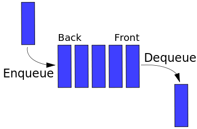

- Brian Holt
- GitHub
- Watch the Videos! Computer Science in 4 Hours Course (Frontend Masters)
Welcome to our workshop! I have to admit, after creating these materials, that completing all this in six hours and really grasping it is ambitious to say the least. This is/can be difficult material and so I would tell you to not be frustrated if you don't get it at first. Remember, students in universities are given semesters to really grasp this.
Which brings me to my next point: it's a bit of a disservice to the great professors out there to say this is four semesters of their classes. While we are drawing from my first four semesters of material, there's a lot of other exercises and materials they go over in college. The title is somewhat of a clickbait title. However, I will say that I believe this material can be distilled down to a shorter and easier to digest level and that's what this class aims to do. This class aims to be a practical intro to CS for those who know JavaScript but have yet to delve into science of programming. This class is a first step.
Really, for any developer, the first and likely last book you need to read is Cormen's Intro to Algorithms (please buy it, it's worth it; thanks MIT.) This book, while not super fun to read, will serve you throughout your entire career. While computers have made leaps and bounds, we're still using the same algorithms and this book will impart that knowledge to you. Just read it, pay the tax, and benefit for the rest of your career! However, in the mean time, this is a good place to start to show that the mental gymnastics of algorithms and data structures are fun.
Have questions, comments, or concerns? Feel free to tweet at me. If there are typos, inaccuracies, or inconsistencies, please file an issue or make a pull request on the GitHub repo.
Important CS Concepts
Big O
Big O is the way we analyze how efficient algorithms (or code in this case) without getting too mired in the details. We can model how much time any function is going to take given n inputs, but in reality we're interested in the order of magnitude of the number and necessarily of the exact figure.
Example: I don't particularly care if a function takes 300 milliseconds versus 330 milliseconds given 1,000 inputs, but I do care if it takes 300 milliseconds versus 30 seconds. This would be a difference in an order of magnitude, or basically we're saying we only care if the difference is pretty large.
Enter Big O. Think of the O as a vacuum that sucks in all the unimportant information and just leaves you with the important stuff. Let's look at a purely mathematical perspective for a second. Say we have the equation 3x² + x + 1. If we plug in 5, the first term will be 75, the second term will be 5, and the third will be 1. In other words, most of the piece of the pie comes from the first term, to the point we can just ignore the other terms. If we plug in huge numbers, it becomes even more apparent. IE if we do 5,000,000, the first term is 75,000,000,000,000, the second is 5,000,000, and the last 1. A huge gap.
Hence this is what Big O does; we ignore the little parts and concentrate on the big parts. Keeping with 3x² + x + 1, the Big O for this equation would be O(n²) where O is just absorbing all the other fluff (including the factor on the biggest term.) Just grab the biggest term. So for n terms, it's going take us n*n time to go through our inputs. So let's see how to derive this from an algorithm.
function crossAdd(input) {
var answer = [];
for (var i = 0; i < input.length; i++) {
var goingUp = input[i];
var goingDown = input[input.length-1-i];
answer.push(goingUp + goingDown);
}
return answer;
}
This is O(n) because we go through all the inputs once in a loop.
function find(needle, haystack) {
for (var i = 0; i < haystack.length; i++) {
if (haystack[i] === needle) return true;
}
}
Still O(n). Unless we say otherwise, we're assuming worst case scenario. In this worst case, the needle would be the last element.
function makeTuples(input) {
var answer = [];
for (var i = 0; i < input.length; i++) {
for (var j = 0; j < input.length; j++) {
answer.push([input[i], input[j]]);
}
}
return answer;
}
This would be O(n²). For every input, we have to go through a full loop inside of another full loop, meaning we're doing a lot of work! This is the trick: look for loops. A loop inside of a loop inside of a loop would likewise be O(n³).
If we have no loops and just do something and exit/return, then it's said we're doing it in constant time, or O(1).
We'll get more into it later, but you can also have O(log n) if a code employs a divide-and-conquer strategy (often recursive,) meaning as you add more terms, the increases in time as you add input diminishes. We'll talk more about that with merge and quick sort.
Recursion is when you define something in terms of itself. Has anyone ever used the word you wanted defined in the definition that they gave you? "What is a computer?" "It's something that computes things." This would be a recursive definition.
When we talk about recursion in computer science, we are talking about a function that calls itself. This technique is especially adept at some problems because of its ability to maintain state at different levels of recursion.
While recursion can make the code very simple for some problems, it inherently carries a potentially large footprint with it as every time you call the function, it adds another call to the stack. Some problems therefore are better solved in a slightly-more-complicated-but-more-effecient way of iteration (loops) instead of recursion.
Sorting Algorithms

Our first sort! This is often the easiest to conceptualize and a natural way for the brain to think about sorting so it's typical to do bubble sort first. It's also amongst the least efficient in terms of worst case scenario.
In bubble sort, we're going to loop through the array and compare each index with the index next to it. If the those two numbers are out of order (the lesser index's value is greater than the greater index's value) we swap those two numbers' places in the array. We keep looping over that array until everything is in place and nothing was swapped during the last iteration.
What's the Big O on this? Well, there's an inner loop to check to see if indexes need to be swapped, and an outer loop that's just checking to see if anything was swapped. That would be make it O(n²). Not efficient, but a great learning tool. You'll never use bubble sort for anything serious.

Insertion sort is a step more complex but a bit more useful than bubble sort and is occasionally useful. The worst case scenario for it is similar to bubble sort's but its best case makes it suited for times when you're pretty sure a list almost sorted or likely already sorted.
We're going to start at the beginning of the list and assume we have a sorted list of length 1 where the first element is only sorted element. We're then going to grab the second element, and insert it into the correct spot in our sorted list, either the 0 index or the 1 index, depending if it's smaller or larger than our first element. We now have a sorted list of length 2. We then continue on down the line, inserting elements in our sorted side of the list as the unsorted side dwindles.
What's the Big O? There's an inner loop that goes over your sorted list to find the correct place to insert your item, and an outer loop to go over all the numbers. Two loops means O(n²). However since if your list is sorted or nearly so, it can be O(n) in a best case scenario and thus well adapted to that scenario.

Our first divide-and-conquer algorithm! Merge sort is actually very useful and one of the easier divide-and-conquer algorithms to understand. It's easier to conceptualize than some of the other ones. A key to merge sort is that it is recursive. If you're struggling to grasp recursion, this is going to be doubly hard to understand this algorithm.
The basic gist of merge sort is that you're going to take your big list, and first divide down in two half size lists and recursively call merge sort on those smaller list, which in turn will do the same. The base case is when you have a list of one, at which point you will return that sorted list of one. On the way up the recursive calls, you will merge those sorted lists together (preferably by another merge function you'll write) that walks through both lists simultaneously and inserts the smaller value first, effectively creating a bigger sorted list.
[1, 5, 6] sublist 1
[2, 7, 8] sublist 2
-> compare 1 and 2, take 1 and put it in new list
-> compare 5 and 2, take 2 and put it in new list
-> compare 5 and 7, take 5 and put it in new list
-> compare 6 and 7, take 6 and put it in new list
-> list one has no more elements
add the rest of list two in order (7 and 8)
This combined merge with the divide-and-conquer recursion proves to be pretty effective. When you call Array.prototype.sort it often uses MergeSort (depending on the engine and the types of the elements in the array.) MergeSort is also stable which just means if you have equivalent elements, it will keep their original order in the array. This is sometimes important and sometimes not.
MergeSort's Big O is O(n log n). Weird, right? We obviously have to compare everything once, but we don't have to compare everything to everything like we do with bubble sort. Rather we just to have to compare to their local lists as we sort. Not too bad.
MergeSort's space complexity is a bit worse than the previous algorithms at O(n) since we have to create new lists as we go. It's not awful but it nonetheless a consideration.
Quicksort is one of the most useful and powerful sorting algorithms out there, and it's not terribly difficult to conceptualize (compared to some algorithms we're not talking about anyway.) Above I mentioned that occasionally JavaScript doesn't mergesort for Array.prototype.sort. In those other cases, it's usually some variant on quicksort.
It's another divide-and-conquer, recursive algorithm but it takes a slightly different approach. The basic gist is that you take the last element in the list and call that the pivot. Everything that's smaller than the pivot gets put into a "left" list and everything that's greater get's put in a "right" list. You then call quick sort on the left and right lists independently (hence the recursion.) After those two sorts come back, you concatenate the sorted left list, the pivot, and then the right list (in that order.) The base case is when you have a list of length 1 or 0, where you just return the list given to you.
[4,9,3,5] list
-> 5 is made the pivot since it's the last in the array
-> divide list into two lists, [4,3] and [9]
-> call quicksort on those two lists
[4, 3]
-> 3 is pivot
-> call quicksort on [] and [4]
-> those both return as is as they are the base case of length 0 or 1
-> concat [], 3, and [4]
-> return [3,4]
[9]
-> returns as this it is a base case of length 1
(back into the original function call)
-> call concat on [3,4], 5, and [9]
-> return [3,4,5,9]
Another Big O of O(n log n) but takes up less memory than mergesort so it is often favored. However it does really poorly if you pass it a sorted list. Think about it. It would always have a pivot of the biggest number which defeats the effectiveness of the divide-and-conquer approach as one side will always contain all the elements. Hence not good for lists you expect may already be sorted. There are some tricks to employ to get around that like checking the beginning, middle, and end numbers and swapping them to try to get the best pivot, but that's outside our scope today. There are a lot of subtle variants on quicksort.
Data Structures - Interfaces
Set
We're going to quickly run through what some of the standard interfaces with data structures are. When I say interface, I mean that you, as a consumer of that data structure, actually don't know how it works underneath; you just know that it works in a certain way. It's a black box to you in that sense. We'll later go over several ways to implement these later.
In any case, a set is pretty simple. You'll also hear them called collections depending which language you're working with. A set allows allows at least four things: add, remove, contains, and toList. The basic idea is that you can add items to a set and then later check if they're there. You can also request later a list of those items in the set (though with no guaranteed order; sets have no notion of order.) They're also useful for deduplication since you can only add something to a set once.
Map
Maps are quite similar to simple JavaScript objects. Maps are a set/collection of keys that have values associated with those keys. Unlike objects, they don't have prototypes, inheritance, methods, or anything of that sort. Maps are also similar to associative arrays in other languages. Again, since the keys are a set, there cannot be duplication of keys (makes sense, right?) You can have duplication of values though. Key 'thing' can have value 'map' while key 'other thing' can have a value of 'map' as well.

Stack
Stack is an interface that adheres to the "Last-In First-Out" (LIFO) mantra. In a stack, you can only push (add) or pop (remove.) The last thing you pushed will be what pop returns to you (pop will also remove it from the stack.) Often they'll have a method called peek too which just looks at the top value of the stack without modifying the stack.
Think about programming a method in JavaScript
function double(x) { return 2 * x; }
function squareAndAddFive(y) { return square(y) + 5; }
function square(z) { return z * z; }
function maths(num) {
var answer = double(num);
answer = squareAndAddFive(answer);
return answer;
}
maths(5);
Let's examine how JavaScript actually handles this.
-> maths is called; JS pushes maths call on its call stack
-> inside maths, double is called; JS pushes double onto its call stack
-> doubles completes, returns value 10; JS pops double off its call stack
-> back inside maths, squareAndAddFive is called;
JS pushes squareAndAddFive on its call stack
-> inside squareAndAddFive, square is called;
JS pushes square on its call stack
Let's look at call stack right now
square
squareAndAddFive
maths
main
-> square completes, returns 100
-> squareAndAddFive completes, returns 105
-> maths completes, returns 105
As you can see, your code is modeled using a stack, and if you've done any amount of modern (often C based) programming, that should make some sense to you.

Queue
Can't talk about a stack without talking about a queue. Queues adhere to the "First-In First-Out" mantra. As the name may invoke the imagery for you, it's similar to people queueing in line (hopefully.) All stacks need to have the methods enqueue (add/push) and dequeue (remove/pop). Like stacks, they'll have peek to see what the next element is to dequeue.
Queues are useful for lots of programming problems. How about print jobs? Usually you want things to print in the order sent to the printer; otherwise Janice from Accounting is going to be printing all of her documents before you can print anything.
There are also priority queues as well. In a priority queue you also assign a priority to the elements that are enqueued. Items that have higher priorities get dequeued first. This is useful for networking; some packets are more important than others. If you're streaming video, that gets a high priority because getting a packet later means likely skipping some frames, whereas syncing to Dropbox can wait for a lull in network traffic to continue syncing.
Data Structures - Implementations
We are going to talk about two types of implementations of array, ArrayList and LinkedList (terms we're borrowing from Java.) What we're going to do is to approximate how these work underneath the hood; in reality since JavaScript is a garbage-collected language that you don't have worry about allocation and de-allocation, it is simplified.
ArrayList is done by directly interacting with an allocated piece of memory. You then interact with that allocated piece of memory by addressing the specific indices in the array. In other words, you just treat it like a normal array. However things get a bit more complicated when deleting items from an ArrayList: you have to collapse the list down to the spot where you deleted.
[a,b,c,d,e,f,g]
-> delete index 3
-> array is [a,b,c,(blank),e,f,g]
-> shift elements 4,5,6 back one index
-> array is [a,b,c,e,f,g]
-> decrement length
For our second data structure, we're going to implement a LinkedList. LinkedList is made of a bunch of nodes that point to the next one in the list. Every node in a LinkedLists has two properties, the value of whatever is being store and a pointer to the next node in the list.
LinkedLists have their ups and downs. On one hand, adding and removing is a breeze: you just have the change the next pointer on the previous node and that's it. Getting is a pain though: if .get is called you have to loop through the nodes until you get to the right node. And that's the tradeoff between LinkedList and ArrayList: LinkedList's adds and deletes are O(1) but the gets are O(n); ArrayList's adds and deletes are O(n) but the gets are O(1). So which one is better? It depends! If you're doing a bunch of adds and deletes but not many gets, stick to LinkedLists. Doing a bunch of gets? ArrayLists. Both? You decide!
Let's dissect a delete.
value: [a] [b] [c] [d]
next: [ ]-> [ ]-> [ ]-> [ ]-> null
-> delete is called on index 2 (value 'c')
-> grab the head (value 'a')
-> loop through the nexts until you get the index
before the one to be deleted (value 'b')
-> change the the next of index 1 to be the next of index 2
-> decrement length
-> return the value of the deleted node
Trees cans be a useful structure for a middle ground between LinkedLists and ArrayLists. We're going to look a simple flavor of trees: the trusty binary search tree. The gist of the BST is that a node in a BST has zero, one, or two subtrees. Every element in the left subtree is lesser than the value of the node and every node in the right is greater. By being able to depend on this fact, it makes it very simple to add and find new elements. Like LinkedLists, we just have to change pointers when we add new elements. Let's step through an add.
Current Tree:
10
/ \
5 15
/ \ /
3 8 12
-> .add is called with 7
-> start at root (10)
-> lesser than 10, go left to 5
-> greater than 5, go right to 8
-> lesser than 8, go left
-> no element at left, create new node
and make it the left subtree of 8
10
/ \
5 15
/ \ /
3 8 12
/
7
BSTs get an average case of O(log n) on gets, adds, and deletes, but they can have a worst case of O(n) if you do something like add a sorted list to a BST. Go ahead, do a BST then add [1,2,3,4,5] to it.
1
\
2
\
3
\
4
\
5
Kind of a problem, right? Well, we'll address that in the next problem. BSTs do perform well so long as you stay away from their edge cases.
AVL tree are the answer to the problem that BST have: BST can easily get out of balance. Even if it's not the worst case scenario of ascending or descending lists being added, even a random distribution on numbers on a BST is going to pretty heavy in places. There are several ways to balance these trees and we're going to tackle one of them: AVL trees. AVL is the initials of its authors: Georgy Adelson-Velsky and Evgenii Landis.
AVLs are specialized BSTs. That is to say a valid AVL tree is always a valid BST (but not necessarily vice versa.) When you add a new value to a AVL tree, you do it the same way. The only difference is on the way up your recursive calls you check to see if the node is balanced after you added the new node. A tree is out of balance if its subtrees' difference of heights is greater than one.
So what's the benefit of all this extra effort? We can now guarantee that we won't hit those bad or worst case scenarios of having greatly out-of-balance trees and guarantee we won't hit the O(n) cases. Our worst case becomes O(log n).
So let's go through the hardest part of AVL trees, the rebalances (actually deletes may be harder but we're not going to do them!) The basic idea is that if one side of tree gets too heavy (ie the max height of one of its children is two more than the max height of the other child) then we need to perform a rotation to get the tree back in balance. Let's take a look at the most basic rotation.
5
\
8
-> Currently valid AVL tree
-> .add called with 9
5 - node A
\
8 - node B
\
9 - node C
(on the way up from the recursion)
-> check balance of node C: left height is 0, right height is 0, balanced
-> check balance of node B: left height is 0, right height is 1, balanced
-> check balance of node A: left height is 0, right height is 2
unbalanced, right heavy, child is right heavy
-> perform right rotation
-> swap the values of nodes A and B
-> make node B the left child of node A
-> make node C the right child of node A
-> move node B's right child to its left child
(in this case they're both null)
-> make node A's _original_ left child
(which was null in this case) the left child of node B
-> update the heights of all the nodes involved
8 - node A
/ \
5 9
node B node C
This was a right rotation, but a left rotation is mirror of this. This generalized formula works for all but one case which we'll examine now. Even in this special case, all you have to do is perform an extra rotation which you already have the logic for.
5
\
8
-> currently valid AVL tree
-> .add called with 7
5 - node A
\
8 - node B
/
7 - node C
(on the way up from the recursion)
-> check balance of node C: left height is 0, right height is 0, balanced
-> check balance of node B: left height is 0, right height is 1, balanced
-> check balance of node A: left height is 0, right height is 2,
unbalanced, right heavy, child is left heavy
Try performing just a straight right rotation. It's not super helpful because you just end up with a still-unbalanced tree.
8 - node A'
/
5 - node B'
\
7 node C'
That's a problem, right? So now we have to what's called a double rotation. You perform a double rotation when the opposite child is heavy during a rotation. Look at our example (the 5\8/7 example.) We're doing a right rotation but the left child of the right child is heavy (it's not out of balance, it's just heavier than the right child.) So what we're going to do is before we do a left rotation on the right child before we do a right rotation on the root node of the rotation.
5 - node A
\
8 - node B
/
7 - node C
[ ... previous steps ]
-> check balance of node A: left height is 0, right height is 2
unbalanced - right heavy, child is left heavy
-> perform left rotation on left heavy right child node B
5 - node A
\
7 - node B
\
8 - node C
-> now perform right rotation on node A
7 - node A
/ \
5 8
node B node C
That's it! Nailing down the logic of those rotations is a pain but once you do AVL trees are just a series of either left or right rotations on a BST. Even deletes follow this pattern; it's just in deletes sometimes you have to do even more rotations.
Hash tables are extremely powerful tools in modern CS and are used extensively in things like programming languages' underpinnings, databases, caches, etc. They do have some tradeoffs, namely potentially memory footprints and the need for complicated hashing but they have constant time (O(1)) lookups, deletes, and adds if you're doing a set or map.
The gist of a hash table is you send your key through a hashing function (like MD5, SHA1, or one of your invention) which converts the to an addressable space (some sort of index.) Since in JavaScript we don't actually manage memory on that low of level, we're going to approximate the way it would work with a large empty array. However keep in mind that if this was a language where we managed our own memory we'd be doing that instead.
This is powerful for maps because now our key points to exactly where our object is being store. And it's very powerful for sets because we can just check where if anything exists that memory address and if so then it exists; if not then that key is not in the set. When we delete or add there's no lookup cost either so we have constant time deletes, adds, and lookups. A perfect structure, right? Well, no, not really.
First of all, this isn't useful for something an order with (a list of some sort) because your addresses won't have any notion of order.
Secondly, you need a sufficiently large footprint of memory to be able to store all of your objects without collisions (we'll talk about collisions in a sec.) This can balloon quickly.
Thirdly, you'll need a good hashing algorithm that spits out a viable address for table. That algorithms needs to have several qualities to it. It needs to be idempotent. Idempotent is a fancy way of saying that a function given an input always outputs the same output. function double(x) { return 2x; } would be an idempotent function because if I do double(5) a million times, on the million-and-first try I'll still get the answer 10. The function double is idempotent. Take the following function:
var multiplier = 0;
function doublePlus(x) {
multiplier++;
return 2 * x * multiplier;
}
The above function is not idempotent because if I call I keep calling the doublePlus function with 5, I'm going to keep getting different answers. It is not idempotent because the function has side effects. Side effects are when calling a function makes some effect to the state surrounding it. You generally want to avoid side effects in programming as much as possible because it makes debugging much hard, makes your code less testable because it means you code must be in a certain state to work a certain way, and makes the code harder to read because you have to think about functions over term instead of in a vacuum because they depend on the code around them. Idempotence is critical in a good hashing function because given a certain input it always has to address the same place in memory or else the whole idea of a hash table falls apart.
A good hashing algorithm needs to have a pretty good distribution of values. If it doesn't have a good distribution of values you are going to end up with collisions. Collisions happen when two inputs end up with the same the output, which means they are going to end up in the same spot in memory. That's a problem. An example of a poor hashing algorithm would be substituting 1 for a, 2 for b, 3 for c, etc. for a string. 'az' (1 + 26) and 'by' (2 + 25) are going to collide, as would 'za'. You need them to have a wide and as-even-as-possible distribution.
A good hashing algorithm needs to be performant too; the point of a hash table to have lightning fast lookups and writes; if your hashing algorithm is mega slow then you're defeating the purpose; ie don't use cryptographically secure algorithms!
The modulo operator (%) is important to understand in hashing too. Generally the numbers your hashing algorithms will generate huge numbers, numbers far larger than the size of your array. To ensure that your number falls in a legal limit of 0 to the largest index in the array, we're going to use the modulo operator. Remember doing long division in school? Where 10 / 3 = 3 remainder 1? The modulo operator give you just the remainder. So 10 % 3 = 1. It just totally throws away the result of the integer division. This is useful because now we can get huge numbers but still ensure they fall in an acceptable range.
Functional Programming 101
Functional programming is currently making a big resurgence in the front end community general consciousness. Though certainly none of it was invented here, it is starting to see more wide spread adoption in the front end community.
There are many, many facets to functional programs and it's a disservice to say we're going to do anything but scratch the surface of the power of functional programming. Learning to functional program, whether you choose to adhere to its tenants going forward or not, will make you a much better programmer. It teaches you ways to structure your code to make it maintainable, compose able, and easy to reason about.
We're going to focus in on a few key concepts. First would be avoiding side effects. We talked a bit about side effects earlier; we want to minimize where we affect state. This makes our program easier to reason about because we can easily reason through individual parts of our code. If your code has a lot of state that gets modified everywhere then you have reason through your code over time instead of being able to take tiny snapshots of individual functions. A function that modifies no state and is idempotent is called a pure function. We generally want small, focused, pure functions.
Second, we're going to focus on higher order function. Because JavaScript has functions as first-class citizens, this makes pattern possible. We can pass functions into other functions, and this pattern of composition makes for some powerful paradigms. The few functions we're going to focus on are all higher order functions. Pure functions are important parts of higher order functions because we're going to run this functions over and over again.
Third, we're going to typically focus on transforming lists of data. When you're operation exclusively on lists, it's called vector or array programming. When you're doing that, you can depend on the fact that you can take the output of one function and safely put that into the next function. We can chain calls together. Our code becomes expressive at this point. We begin describe what we want to happen rather than imperatively telling how.
Map is a higher order function. That is to say it takes in another function and has its own logic on how to apply that function. Map is the first one we'll look at and amongst the useful tool in your functional programming tool box.
Map has similarities to forEach. It takes a function in and applies that function individually to each element in that array. Where it differs from forEach is that map creates a new array of the values returned within the function. It allows you to transform whole lists of values without modifying the original list.
var array = [1,2,3,4,5];
var transformed = array.map(function(num) { return num+1 });
console.log(transformed); // [2,3,4,5,6]
Next on our functional adventure is reduce. Reduce is really useful when you a have a list of values that you want to combine in some meaningful way down to one value. You'll often hear the term map/reduce thrown around in regards to data science; they're used a lot in that sense because you're taking large sets of data, doing some transformations on them to get them in a certain state, and then reducing them down to useful statistics.
A reduce function involves a list it's being called, a function that does the reducing, the accumulator, and the seed value. The accumulator is the interim value that is passed into each call of the reducer function that the function then returns. The value returned is then passed into the next call of the reducer function on the next value. The seed value is the value of the first accumulator. If there's no seed value, the zero index in the array is the seed.
var list = ['a','b','c'];
list.reduce(function(accumulator, letter) {
return accumulator + letter.toUpperCase();
}); // returns aBC since a becomes the seed
list.reduce(function(accumulator, letter) {
return accumulator + letter.toUpperCase();
}, ''); // returns ABC since '' starts as the seed
The third tool on our functional tool belt is filter. Filter does exactly what it sounds like: it takes a list of items and pares out some of the items you don't need in the list. All you have to do is write a filter function that returns true if you want the item to stay in the list or false if you want it removed from the list. The returned result is a new list with just the items you returned true on.
- Watch the Videos! Computer Science in 4 Hours Course (Frontend Masters)
- For more, check out part 2: Computer Science in 4 Hours, Part 2